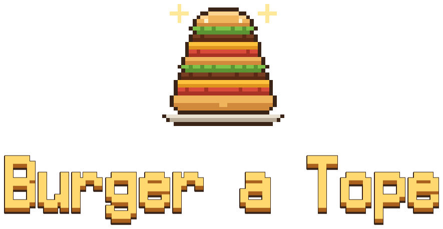
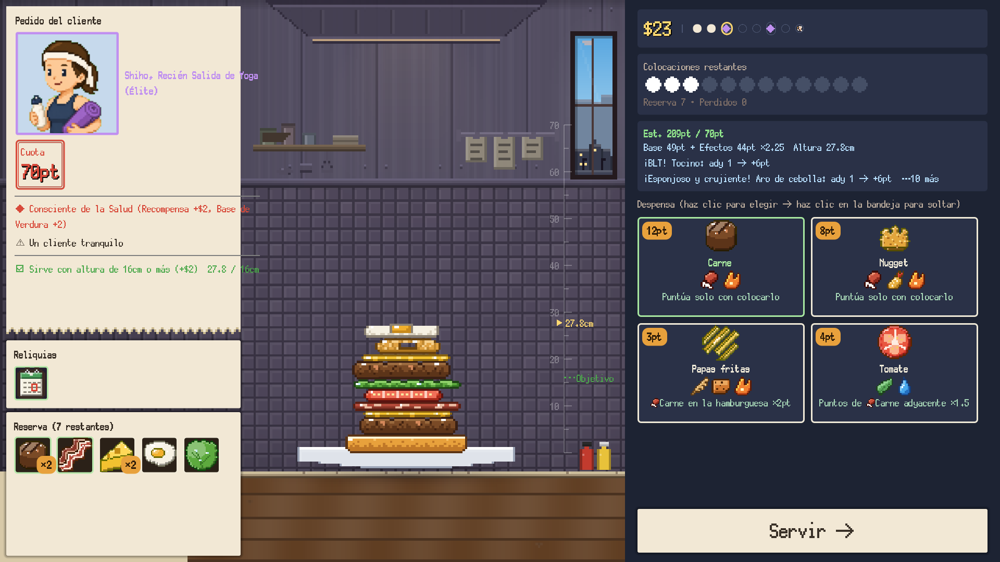
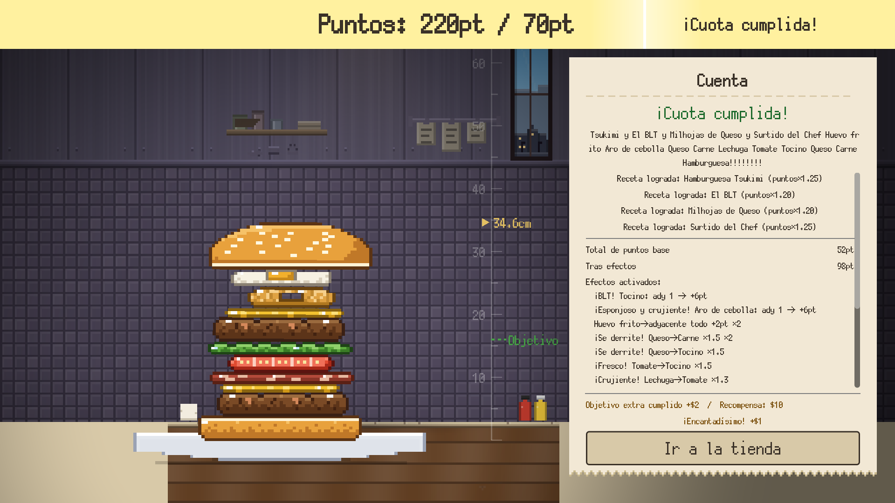
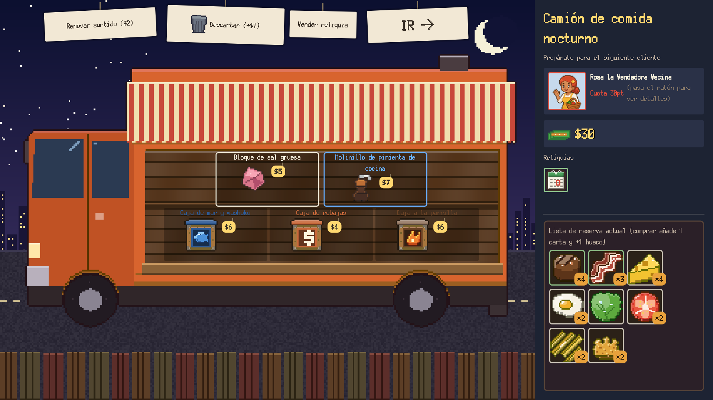

¡Suéltalo! ¡Apílalo! ¡Emparéjalo y que rinda!
Roguelike de hamburguesas con física real
Agregar a la lista de deseados en SteamLanzamiento previsto: 4.º trimestre de 2026 / Windows (Steam)
¿De qué va?
Burger a Tope es un roguelike de construcción de mazos en el que apilas hamburguesas con física real.
Tú llevas la hamburguesería. Cada cliente pide una cuota, y tú montas la hamburguesa para cumplirla, en el momento, sobre el plato. El problema es que los ingredientes obedecen a la física. Apuntar la caída y mantener la torre en pie depende de ti. Los ingredientes adyacentes encadenan efectos entre sí: cuanto más alto y ordenado apilas, más sube la puntuación.
Cómo va una partida

Apunta y suelta
Suelta los ingredientes de tu mano sobre el plato apuntando bien y activa sinergias entre vecinos. Ruedan, se inclinan y se derrumban.

Empareja para la sinergia
Corona con el bollo de arriba para servir y puntuar. Los efectos de los vecinos se encadenan y la puntuación se dispara. Si no llegas a la cuota, fin de la partida al instante.

El food truck nocturno
Al despachar a un cliente, abre el food truck nocturno (la tienda): compra cajas y reliquias y descarta los ingredientes que sobran. Deja satisfecho al jefe final y habrás ganado.
Lo que apilas
- Más de 90 ingredientesPuntos, multiplicadores, cuencos. Todos los efectos miran al lado
- Más de 30 recetasLa combinación justa da un multiplicador a toda la hamburguesa y desbloquea nuevos ingredientes
- Más de 40 reliquiasEfectos permanentes que suben etiquetas enteras
- 8 chefsBollo propio y reserva inicial
- Clientes con personalidadFavoritos, manías, huesos. El pedido cambia cada vez
- Más de 70 logrosAdemás, Compendio y Álbum de hamburguesas
Ponte a prueba
El rango del local ★0–5 y el Chef veterano (el punto de caída se mueve solo de un lado a otro) suben la dificultad. Las puntuaciones del reto diario y de las horas extra compiten en las clasificaciones de Steam.
{kind=link}
{kind=link}
{kind=link}
{kind=link}
{kind=link}
Información del juego
- Título
- Burger a Tope
- También conocido como
- A Bun Above / いただきバーガー
- Género
- Apilado con física × roguelike de construcción de mazos
- Desarrollador / editor
- NoZworks
- Plataforma
- PC (Steam) / Windows 10 y 11 (64 bits)
- Lanzamiento
- 4.º trimestre de 2026 (previsto)
- Idiomas
- Español / 日本語 / English / 简体中文 / 繁體中文 / 한국어 / Deutsch / Français / Português (Brasil) / Русский
Agrégalo a tu lista de deseados y no te pierdas el lanzamiento
Ir a la página de Steam